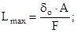
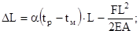
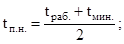
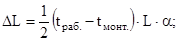
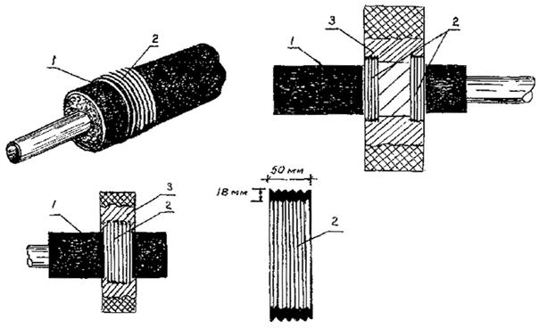

ДЕПАРТАМЕНТ СТРОИТЕЛЬСТВА
НАУЧНО-ТЕХНИЧЕСКОЕ УПРАВЛЕНИЕ МОССТРОЙЛИЦЕНЗИЯ
ВЕДОМСТВЕННЫЕ
СТРОИТЕЛЬНЫЕ НОРМЫ
ПО ПРОЕКТИРОВАНИЮ
И БЕСКАНАЛЬНОЙ ПРОКЛАДКЕ
в г. МОСКВЕ ГОРОДСКИХ ДВУХТРУБНЫХ ТЕПЛОВЫХ СЕТЕЙ ИЗ ТРУБ
С ИНДУСТРИАЛЬНОЙ ТЕПЛОИЗОЛЯЦИЕЙ ИЗ ПЕНОПОЛИУРЕТАНА
В ПОЛИЭТИЛЕНОВОЙ ОБОЛОЧКЕ
ВСН 29-95
Москва - 1996
Настоящие строительные нормы разработаны НИИМосстроем и институтом Мосинжпроект (при участии АОЗТ "Мосфлоулайн") в соответствии с Постановлением Правительства Москвы № 992 от 1 ноября 1994 г. "О комплексной программе по разработке и выпуску Московских городских строительных норм и правил, отраслевых стандартов и технических условий для строительства в г. Москве" (приложение 4, п.1) по заданию Научно-технического управления Департамента строительства (договор № 2-10/95 от 8 февраля 1995 г. по теме "Переработка ВСН по проектированию и бесканальной прокладке в г. Москве городских двухтрубных тепловых сетей из труб с индустриальной теплоизоляцией из пенополиуретана в полиэтиленовой оболочке").
Настоящие нормы подготовлены взамен действовавших до 1 сентября 1992 г. ВСН по проектированию и бесканальной прокладке в г. Москве тепловых сетей из труб с индустриальной теплоизоляцией из пенополиуретана в полиэтиленовой оболочке" (распоряжение МГИ № 1504р от 18.09.90) с последующим продлением Департаментом строительства срока их действия до 1 февраля 1996 г.
Разработке 1-й редакции новых строительных норм предшествовало обобщение отечественного и зарубежного опыта заводского изготовления теплоизолированных пенополиуретаном стальных труб, опыта проектирования из них тепловых сетей, бесканальной прокладки и г.Москве теплопроводов из изолированных ПНУ труб, производства как АОЗТ "Мосфлоулайн" (МОЭТЗК), так и зарубежных фирм.
При подготовке норм также использованы Европейские стандарты: JSOEN 253, JSOEN 448, JSOEN 489, JSOEN 288, JSOEN 488.
Настоящие ВСН согласованы с АОЗТ "Мосфлоулайн", Всероссийским теплотехническим институтом НИПИ "Теплопроект", АКХ им.Памфилова, теплосетью "Мосэнерго", ГМП "Мостеплоэнерго", Мосижстрой, АО "Моспроект".
В разработке ВСН участвовали: от НИИМосстроя - к.т.н. Сладков А.В., Симакова О.П., Гамаева Л.И., от Мосинжпроекта - Юнусов Ю.У., Шевченко И.Г., Афонин Г.И., от АОЗТ "Мосфлоулайн" - к.т.н. Иванов Ю.К.
Ведомственные строительные нормы разработаны при участии Мосстройлицензии (Столяров Ю.И., к.т.н. Фельдман В.Д.)
|
Департамент строительства |
Ведомственные строительные нормы |
ВСН 29-95 Департамент строительства |
|
Научно-техническое управление |
Ведомственные строительные нормы по проектированию и бесканальной прокладке в г. Москве городских двухтрубных тепловых сетей из труб с индустриальной теплоизоляцией из пенополиуретана в полиэтиленовой оболочке |
Взамен |
1.1. Настоящие ВСН распространяются на подземную бесканальную прокладку в г. Москве двухтрубных тепловых сетей диаметром до 1000 мм, рабочим давлением до 1,6 МПа, рабочей температурой горячей воды до 130°С и кратковременным воздействием температуры до 140°С.
Примечание. Настоящие ВСН не распространяются на внутриквартальные тепловые сети после тепловых пунктов.
При проектировании и строительстве тепловых сетей после тепловых пунктов из теплоизолированных пенополиуретаном труб следует руководствоваться ВСН 11-94.
1.2. Для строительства тепловых сетей в г. Москве должны применяться стальные трубы с теплогидроизоляцией из теплостойкого пенополиуретана (ППУ) (бесфреонных или озононеразрушающих марок) в трубе-оболочке из полиэтилена низкого давления (ПНД), выпускаемые АОЗТ "Мосфлоулайн" по ТУ 400-24-578-92 с изменениями № 1, № 2 и № 3 и ТУ 400-24-578-95.
|
Внесены НИИМосстроем |
Утверждены Научно-техническим управлением Департамента строительства "27" сентября 1995 г |
Срок введения в действие "1 " октября 1995 г. |
Сортамент труб представлен в табл. 1 (условные обозначения см. на рис. 1).
Рис. 1. Индустриальная конструкция теплоизоляции труб:
1 - стальная труба; 2 - пенополиуретан (ППУ); 3 - оболочка из полиэтилена низкого давления (ПНД); 4 - центрирующие опоры из полипропилена (ПП); 5 - прополочные проводники-индикаторы системы оперативного дистанционного контроля (ОДК) состояния теплоизоляции из ППУ; 6 - держатели проводников-индикаторов из ПП; 7 - металлическая крепежная лента; 8 - полимерная крепежная лента
Таблица 1
Сортамент
и масса труб с индустриальной теплоизоляцией из пенополиуретана в
полиэтиленовой оболочке
(размеры в мм, масса - в кг)
|
Минимальная толщина стенки стальных труб, d |
Наружный диаметр полиэтиленовых труб, d1 |
Толщина |
Длина |
Ориентировочная масса 1 м изолированной трубы, m |
||||
|
условный, |
наружный, dу |
полиэтиленовых труб-оболочек (с допуском), S1 |
теплоизоляционного слоя из ППУ, S2 |
Шаг опор, l |
неизолированных концов труб, l2 |
|||
|
50 |
57 |
3,0 |
140 |
3,0+0,6 |
38,5 |
975 |
150+0-20 |
6,6 |
|
70 |
76 |
3,0 |
160 |
3,0+0,6 |
39,0 |
975 |
150+0-20 |
8,6 |
|
80 |
89 |
3,0 |
180 |
3,0+0,6 |
42,5 |
965 |
150+0-20 |
10,2 |
|
100 |
108 |
3,5 |
200 |
3,2+0,5 |
41,8 |
965 |
150+0-20 |
12,5 |
|
125 |
133 |
3,5 |
225 |
3,5+0,6 |
41,2 |
955 |
150+0-20 |
15,4 |
|
150 |
159 |
4,5 |
250 |
3,5+0,6 |
40,2 |
955 |
150+0-20 |
22,1 |
|
200 |
219 |
5,0 |
315 |
5,6+0,8 |
41,3 |
950 |
150+0-20 |
39,4 |
|
250 |
273 |
5,0 |
400 |
6,3+0,8 |
55 |
935 |
150+0-20 |
51,6 |
|
300 |
325 |
6,0 |
450 |
7,0+0,9 |
53,1 |
935 |
210+0-20 |
61,6 |
|
400 |
426 |
6,0 |
560 |
8,8+1,1 |
55,1 |
935 |
210+0-20 |
93,7 |
|
500 |
530 |
7,0 |
710 |
11,1+1,3 |
75,7 |
935 |
210+0-20 |
126,3 |
|
600 |
630 |
7,0 |
800 |
12,5+2,6 |
66,7 |
973 |
210+0-20 |
173,8 |
|
700 |
720 |
8,0 |
900 |
14+2,9 |
69,5 |
973 |
210+0-20 |
242,6 |
|
800 |
820 |
8,0 |
1000 |
15,6+3,2 |
67,2 |
973 |
210+0-20 |
250,2 |
|
900 |
920 |
9,0 |
1100 |
17,6+3,5 |
64,9 |
973 |
210+0-20 |
313,4 |
|
1000 |
1020 |
10,0 |
1200 |
19,6+3,8 |
62,7 |
973 |
210+0-20 |
378,1 |
Примечание. Допускается применение в г.Москве для бесканальной прокладки тепловых сетей труб инофирм с аналогичным типом изоляции, не уступающим по показателям свойств требованиям ТУ 400-24-578-92, ТУ 400-24-578-95 и на стоящих ВСН; а также имеющих сертификаты соответствия Госстандарта РФ или Минстроя РФ, или Минтопэнерго РФ, или уполномоченных базовых центров сертификации.
1.3. Стальные трубы под теплоизоляцию из ППУ должны отвечать Правилам устройства и безопасной эксплуатации трубопроводов пара и горячей воды Госгортехнадзора и СНиП 2.04.07-86* (п.7.1. и п. 7.2) и иметь сертификат качества завода-изготовителя, который должен входить в пакет сопроводительной документации на теплоизолированные ППУ трубы.
1.4. Основные физико-механические показатели свойств теплоизоляции труб приведены в табл. 2.
Таблица 2
Показатели свойств теплоизоляции и изолированных труб
|
Наименование показателей свойств, единица измерения |
Нормируемое значение показателя |
|
|
1 |
Кажущаяся плотность пенополиуретана в теплоизоляционной конструкции, кг/м3, не менее |
60 |
|
2 |
Прочность ППУ на сжатие, МПа, не менее |
0,3 |
|
3 |
Водопоглощение, % по объему, не более |
10 |
|
4 |
Объемная доля закрытых пор, %, не менее |
87 |
|
5 |
Коэффициент теплопроводности ППУ в конструкции при 20°С, Вт/м°К, не более |
0,04 |
|
6 |
Предел текучести при растяжении оболочки из ПНД, МПа, не менее |
21 |
|
7 |
Относительное удлинение при разрыве полиэтиленовой оболочки, %, не менее |
210 |
|
8 |
Прочность теплоизоляционной конструкции на сдвиг в тангенциальном направлении, МПа, не менее |
0,2 |
1.5. В комплекте с изолированными трубами должны поставляться следующие теплоизолированные ППУ фасонные изделия, элементы и детали:
- отводы с шагом 7,5 град на угол от 75 до 90 град;
- равнопроходные и разнопроходные тройники одноплоскостные и двухплоскостные;
- тройники-спускники;
- неподвижные опоры;
- компенсаторы осевые сильфонные;
- стартовые компенсаторы;
- миникомпенсаторы;
- воздушники;
- запорная арматура;
- концевые заглушки;
- элементы изоляции стыковых соединений;
- заглушки теплоизоляции;
- полуцилиндры из ППУ;
- компоненты "А" и "Б" для заливки стыков;
- гильзы резиновые для прохода теплопровода сквозь стенки строительных конструкций;
- амортизирующие прокладки для компенсации температурных удлинений на углах поворота;
- элементы системы оперативного дистанционного контроля (см. п.2.46).
Примечание. При необходимости по специальному заказу могут поставляться фасонные изделия, элементы и детали других видов.
1.6. Теплоизоляция фасонных изделий, элементов и деталей должна соответствовать требованиям ТУ 400-24-578-95.
Примечание. Допускается комплектация труб изолированными фасонными изделиями и элементами импортного производства при наличии сертификата соответствия Госстандарта РФ или Минстроя РФ.
1.7. При проектировании и строительстве тепловых сетей с применением труб, фасонных изделий, элементов и деталей с индустриальной теплоизоляцией из пенополиуретана в полиэтиленовой оболочке должны соблюдаться требования настоящих ВСН всеми заводами-изготовителями и другими поставщиками изолированных труб, фасонных изделий, элементов и деталей проектными, строительными, эксплуатационными и согласующими организациями.
2.1. При проектировании бесканальной прокладки городских тепловых сетей из труб, фасонных изделий, элементов и деталей теплоизолированных ППУ следует соблюдать общие требования СНиП 2.04.07-86*, СНиП 3.05.03-85 "Тепловые сети" и СНиП 2.04.14-88 "Тепловая изоляция оборудования и трубопроводов".
2.2. Канальная прокладка должна применяться под проезжей частью городских проездов и площадями города.
При пересечении городских и местных проездов, трамвайных путей теплопроводы с пенополиуретановой изоляцией в полиэтиленовой оболочке должны прокладываться, как правило, в стальных футлярах, в отдельных случаях в каналах или в полупроходных каналах высотой не менее 1,4 м.
При невозможности выдержать указанные расстояния, теплопроводы должны прокладываться либо в каналах на расстоянии не менее 2-х метров от фундаментов зданий или в стальных футлярах, либо в пристенных (пристроенных к фундаментам зданий) проходных каналах из монолитного железобетона с металлоизоляцией. При этом теплогидроизоляция стыков изолированных труб должна выполняться с использованием полиэтиленовых муфт на сварке.
2.4. Прокладку тепловых сетей под проездами общегородского значения, площадями с усовершенствованными дорожными покрытиями, при пересечении крупных автомагистралей и железных дорог следует предусматривать в проходных каналах, щитовых тоннелях или футлярах.
2.5. Трубопроводы тепловых сетей с пенополиуретановой изоляцией в полиэтиленовой оболочке при бесканальной прокладке, располагаемые над сооружениями метрополитена, должны прокладываться в стальных футлярах, без устройства монолитных камер, концы стального футляра должны выходить за пределы тоннеля метрополитена на 10 м в обе стороны. В пониженных точках бесканальной прокладки до или после пересечения линии метрополитена должны устраиваться спускники с выпуском в существующую систему дождевой канализации. Отключающие устройства на теплосети должны располагаться, как правило, на расстоянии 0,1 км от линии метрополитена, но не далее 1,0 км.
2.6. Проектирование бесканальной прокладки теплопроводов с пенополиуретановой изоляцией в полиэтиленовой оболочке следует осуществлять по возможности длинными прямолинейными участками.
2.7. При прокладке тепловых сетей бесканальным способом трубы укладываются на песчаное основание толщиной 150 мм с песчаной обсыпкой толщиной 150 мм при несущей способности грунтов не менее 0,15 МПа (1,5 кгс/см2) (см. рис. 2). При несущей способности грунтов менее 0,15 МПа (1,5 кгс/см2) основание должно устраиваться по индивидуальным чертежам.
2.8. В слабых грунтах с расчетным сопротивлением менее 0,1 МПа (1,0 кгс/см2), а также в грунтах с возможной неравномерной осадкой (в неслежавшихся насыпных грунтах) применение бесканальной прокладки тепловых сетей без искусственного основания не допускается.
2.9. Для теплопроводов, изолированных пенополиуретаном в полиэтиленовой оболочке, дополнительных мероприятий по электрозащите не требуется.
2.10. В местах прокладки теплопроводов возведение строений, гаражей, складирование, посадка деревьев и многолетних кустарников на расстоянии менее указанного в п.2.3 настоящих ВСН запрещается.
Рис. 2. Сечение двухтрубной бесканальной прокладки:
Тп - подающий трубопровод отопления;
То - обратный трубопровод отопления;
1 - крупнозернистый песок основания с коэффициентом фильтрации не менее 20 м/сут; 2 - песок обсыпки с коэффициентом фильтрации не менее 5 м/сут
2.11. Песчаную обсыпку следует выполнять из песка с коэффициентом фильтрации не менее 5 м/сут.
Песок должен быть с величиной гранул не более 16 мм. И не должен содержать крупных включений с острыми кромками, которые могут повредить защитный слой трубопроводов и соединительные муфты.
После засыпки песок должен быть утрамбован, с тем чтобы теплопроводам, проложенным в песке, было обеспечено равномерное трение между внешней оболочкой трубопровода и грунтом.
2.12. Устройство дренажей при бесканальной прокладке тепловых сетей с пенополиуретановой изоляцией в полиэтиленовой оболочке не требуется.
2.13. Устройство камер при применении шаровых кранов повышенной надежности (например фирмы "Клингер") для теплопроводов с изоляцией из пенополиуретана в полиэтиленовой оболочке не требуется.
Управление задвижками (шаровыми кранами) следует осуществлять через люки, установленные на простейших строительных конструкциях.
2.14. На тепломагистралях диаметром 500-1000 м при применении отечественной запорной арматуры необходимо устройство камер-павильонов. Допускается применение запорной арматуры повышенной надежности (шаровых задвижек) иностранных фирм без электропривода и устройства камер-павильонов по согласованию с заказчиком и эксплуатирующей организацией.
2.15. При канальной прокладке тепловых сетей с применением труб, изолированных пенополиуретаном в полиэтиленовой оболочке, конструктивные решения каналов, камер-павильонов принимаются аналогичными решениями при канальной прокладке тепловых сетей с другими видами изоляции.
2.16. Из камер и спускников бесканальной прокладки тепловых сетей с изоляцией из пенополиуретана в полиэтиленовой оболочке должны устраиваться водовыпуски в существующую дождевую канализацию или водоприемные колодцы с последующей откачкой.
2.17. Для теплопроводов диаметром до 150 мм в исключительных случаях допускается устройство водоприемных колодцев с последующей откачкой.
2.18. В местах, где не представляется возможным выполнить самотечный выпуск от спускников в существующую дождевую канализацию из-за высоких отметок лотков, необходимо устройство по согласованию с эксплуатирующими организациями насосных перекачивающих станций.
2.19. Теплопроводы с пенополиуретановой изоляцией в полиэтиленовой оболочке при прокладке в непроходных каналах должны укладываться на подушку из песка с коэффициентом фильтрации 5 м/сут в соответствии с типовым чертежом СК 3303-87-43 института Мосинжпроект (см. рис. 3). Допускается прокладка на скользящих опорах.
2.20. При реконструкции тепловых сетей допускается укладка теплопроводов с изоляцией из пенополиуретана в полиэтиленовой оболочке в существующий непроходной канал с засыпкой последнего песком.
2.21. Все подземные прокладки труб, фасонных деталей и арматуры с пенополиуретановой изоляцией в полиэтиленовой оболочке независимо от диаметров должны оснащаться системами оперативного дистанционного контроля (ОДК) состояния изоляции теплопроводов (см. п.2.46).
2.22. Компенсация тепловых перемещений при бесканальной прокладке может осуществляться либо обычным "холодным" методом, либо с предварительным нагревом теплопроводов.
2.23. "Холодный" метод с использованием естественной компенсации (углы поворота, П- и Z-образные компенсаторы) или сильфонных компенсаторов на длинных прямых участках трассы практически не отличается от аналогичных способов компенсации при канальной прокладке, однако при этом следует учитывать увеличение сил трения по оболочке теплопровода, а также необходимость обеспечения тепловых деформаций в грунтовой среде.
Рис. 3. Сечение двухтрубной прокладки в монолитном канале:
Тп - подающий трубопровод отопления;
То -обратный трубопровод отопления;
1 - канал НКЛ; 2 - гидроизоляция; 3 - песок обсыпки с коэффициентом фильтрации не менее 5 м/сут
Допускается прокладка теплопроводов "холодным" методом с помощью миникомпенсаторов, вмонтированных в трубы, позволяющих на каждой такой трубе иметь определенную деформацию расширения.
2.24. Метод компенсации тепловых перемещений с предварительным нагревом теплопроводов заключается в нагреве теплопроводов в период строительства до средней температуры их эксплуатации, что позволяет снизить напряжение в теплопроводах, уменьшить их деформацию и принять более экономичное проектное решение.
2.25. При холодном методе прокладки с естественной компенсацией перемещений максимальная длина участка от неподвижной опоры до компенсирующего устройства должна приниматься не более Lmax (м), определяемой по формуле:

где do - допускаемое осевое напряжение в стальной трубе;
А - площадь поперечного сечения стальной трубы, мм2;
F - сила трения внешней оболочки о грунт на 1 м длины теплопровода, Н/м; при этом должны приниматься во внимание следующие факторы:
глубина заложения теплопровода;
прочность материала стальной трубы;
предельная величина перемещения компенсирующего устройства.
2.26. Величину силы трения F (Н/м) следует определять по формуле:
F= 0,75×p×d1×h×j×m(1+Кo);
где d1 - наружный диаметр полиэтиленовой оболочки, м;
h - расстояние от поверхности земли до оси трубопровода, м;
j - плотность грунта обратной засыпки, Н/м3;
m - коэффициент трения между грунтом и полиэтиленовой оболочкой;
К - коэффициент бокового давления грунта.
2.27. Величина температурного перемещения теплопровода у компенсирующего устройства при бесканальной прокладке определяется по формуле:

где a - коэффициент линейного расширения стали - (1,2´10-5 1/°С);
tp - рабочая температура теплоносителя, °С;
tм - температура при монтаже теплопровода, °С;
L - длина участка от неподвижной опоры до компенсирующего устройства, м;
F - сила трения внешней оболочки о грунт на 1 м длины теплопровода, Н/м;
А - площадь поперечного сечения стальной трубы, мм2;
Е - модуль упругости стали - 2,1´105 Н/мм2.
2.28. Учитывая удерживающее влияние сил трения, при бесканальной прокладке неподвижные опоры устанавливают в исключительных случаях, в частности при необходимости ограничения тепловых перемещений или на ответвлениях при расчетных величинах усилий от ответвлений, превышающих допустимые.
2.29. Для расчета перемещений условное положение неподвижной опоры принимается в середине прямолинейного участка теплопровода (так называемая "мнимая опора").
2.30. Толщина эластичных прокладок на углах поворота трассы должна обеспечивать полное поглощение перемещений.
2.31. При применении метода предварительного нагрева теплопроводов температура предварительного нагрева определяется по формуле:

где tраб. - рабочая температура теплоносителя, °С;
tмин. - минимальная температура теплопровода в период эксплуатации,°С.
Для тепловых сетей ТЭЦ и РТС г.Москвы tп.н. принимается 70°С.
2.32. Предварительный нагрев теплопроводов следует проводить в случаях, когда имеются длинные прямолинейные (или с большим радиусом кривизны) участки трассы.
Предварительный нагрев с естественной компенсацией перемещений следует применять при монтаже теплопроводов в открытой траншее. При этом должно быть обеспечено свободное перемещение теплопровода на всем протяжении траншеи и ее засыпка и уплотнение при температуре предварительного нагрева.
2.33. В случае невозможности вести работы в открытой траншее длительное время следует осуществлять предварительный нагрев с установкой пусковых компенсаторов.
2.34. При применении настроенных пусковых компенсаторов (аналог сильфонных компенсаторов, но срабатывающих только один раз в момент предварительного нагрева, после чего они наглухо завариваются).
Смонтированный теплопровод засыпается в холодном состоянии за исключением мест установки пусковых компенсаторов, которые засыпаются после предварительного нагрева и заварки.
2.35. Пусковые компенсаторы на прямолинейных участках должны располагаться друг от друга не более чем на расстоянии Lmax.
Настройка пусковых компенсаторов (т.е. определение величины смещения, при котором смыкаются плоскости смонтированных внутри них труб) осуществляется по формуле:

где tмонт. - температура теплопровода в момент монтажа, °С;
L - расстояние между двумя пусковыми компенсаторами (L£Lmах).
2.36. После засыпки предварительно нагретых теплопроводов перемещения их отсутствуют (за исключением участков естественной компенсации) и температурные перепады изменяют лишь напряжения в теплопроводах в пределах допустимых значений.
2.37. При использовании метода предварительного нагрева теплопроводов особое внимание обратить на следующее:
- примыкающие к врезкам в существующие или проектируемые теплопроводы прямолинейные участки должны иметь длину не более 30 м, при более длинных участках у врезок необходимо устанавливать на них неподвижные опоры на расстоянии не более 12 м от врезки;
- на ответвлениях должны свободно обеспечиваться поперечные перемещения путем установки эластичных прокладок.
2.38. При необходимости прокладки тепловых сетей с пенополиуретановой изоляцией в полиэтиленовой оболочке строительные конструкции (камеры, камеры-павильоны, проходные и непроходные каналы, прокладки теплопроводов в футлярах и щитовых тоннелях) должны применяться как и при канальной прокладке.
2.39. Сопряжение бесканальных участков теплопроводов с каналом должно осуществляться путем устройства торцевой стенки с сальниковыми уплотнениями вокруг изолированных теплопроводов (см. рис. 4) или песчаной обсыпкой.
2.40. Проход теплопроводов сквозь стенки камер и фундаменты зданий осуществляется с помощью установки специальных резиновых гильз с последующим бетонированием (бетон В 3,5) в строительной конструкции (см. рис. 5 и 6).
2.41. При невозможности выдержать нормы, предусмотренные СНиП 2.04.07-86", пересечение теплопроводов бесканальной прокладки с газопроводом, водопроводом, электрическими кабелями мощностью до 35 кВ необходимо выполнять по типовым чертежам альбома Мосинжпроекта СК 3105-88 "Конструкции пересечения теплосети с подземными коммуникациями".
2.42. Конструкции железобетонных неподвижных опор для бесканальной прокладки тепловых сетей должны разрабатываться по индивидуальным чертежам на необходимое усилие, определяемое расчетом с учетом местных грунтовых условий.
2.43. Минимальную глубину заложения труб с теплоизоляцией из ППУ в полиэтиленовой оболочке в земле следует принимать не менее 0,5 м вне пределов проезжей части и 0,6 м - в пределах проезжей части, считая до верха теплоизоляции.
Допускаемая расчетная глубина заложения теплоизолированных труб должна составлять ориентировочно для диаметров (стальных труб и полиэтиленовых оболочек) до 76´160 мм - 3,1 м, до 159´250 мм - 3,7 м, до 530´710 мм - 3,6 м, до 1020´1200 мм - 2,4 м.
Рис. 4. Конструкция сопряжения бесканальной прокладки с канальной:
1 - обратный трубопровод; 2 - подающий трубопровод; 3 - 2 слоя изола на битумной мастике; 4 - бетонная подготовка В 7,5; 5 - прокладка марки Вилатерм 40¸50 мм (ТУ 6-06-221-762-84); 6 - теплоизоляция из пенополиуретана; 7 - бетон класса В 15; 8 - 2 слоя изола на битумной мастике
Рис. 5. Конструкция прохода теплопроводов через стены камер, камер-павильонов:
1 - стена камеры; 2 - заводская изоляция труб; 3 - граница заводской изоляции труб; 4 - песчаное основание; 5 - ленточная усадочная муфта; 6 - резиновая гильза; 7 - герметизация стыка прокладкой Вилатерм диаметром 40-50 мм; 8 - заделка зазора гильзы; 9 - гильза; 10 - заделка бетоном В 3,5

Рис. 6. Конструкция прохода теплопроводов сквозь стены фундамента зданий:
1 - изолированный теплопровод; 2 - резиновая гильза; 3 - заделка бетоном В 3,5; 4 - стенка из железобетона; 5 - герметизация; 6 - фундамент здания; 7 - проем; 8 - гильза из тонколистовой стали; 9 - теплоизоляция из минеральной ваты; 10 - покровной слой
При учете транспортной нагрузки НК-80 допускаемая глубина заложения должна быть уменьшена в среднем в 1,6 раза.
Примечание. При необходимости контрольных расчетов глубин заложения теплопроводов с изоляцией из ППУ в ПЭ оболочке для конкретных условий прокладки расчетное сопротивление пенополиуретана следует принимать 0,1 МПа, полиэтиленовой оболочки - 1,6 МПа.
2.44. При необходимости подземной прокладки теплопроводов с теплоизоляцией из ППУ в ПЭ оболочке на глубине более допустимых их следует прокладывать в каналах (тоннелях).
2.45. Для теплогидроизоляции стыковых соединений изолированных ППУ труб между собой и с фасонными изделиями и элементами следует применять конструкцию стыка с полиэтиленовой термоусаживающейся муфтой, полиэтиленовыми термоусаживающимися манжетами и заливкой смесью ППУ (рис.7).
Примечание. Допускается использование других конструкций теплогидроизоляции стыков изолированных ППУ труб, отвечающих требованиям стандарта JSOЕN489.
2.47. Система ОДК должна содержать:
- не менее 2-х проводников-индикаторов, закладываемых в пенополиуретановую теплоизоляцию труб диаметром не менее 1,0 мм;
- прибор для фиксирования увлажнения теплоизоляции;
- прибор для определения координат места (по длине трубопровода) возникновения увлажнения теплоизоляции (инвентарно);
- узлы ввода-вывода проводников-индикаторов из теплоизоляции труб;
- сопутствующие подключающие устройства, кабели и пр.
Рис. 7. Конструкция теплогидроизоляции стыка труб с теплоизоляцией из пенополиуретана в полиэтиленовой оболочке:
1 - стальная труба; 2 - теплоизоляционный слой ППУ; 3 - полиэтиленовая оболочка изоляции; 4 - сварной шов стальных труб; 5 - полиэтиленовая термоусаживающаяся муфта; 6 - отверстие в муфте для заливки смеси ППУ с подслоем герметика; 7 - заливочный ППУ; 8 - термоусаживающиеся манжеты с подслоем герметика; 9 - соединение проводников-индикаторов системы ОДК; 10 - опора-кронштейн из полиэтилена для проводников-индикаторов; 11 - проводники-индикаторы системы ОДК
2.48. Установку фиксирующих приборов системы ОДК следует производить в соответствии с проектом, как правило, в помещениях ЦТП, камерах-павильонах, диспетчерских пунктах и др.
Примечание. Допускается установка фиксирующих приборов системы ОДК в специальных павильонах, сооружаемых на трассе теплопровода.
3.1. Доставка на строительную площадку теплоизолированных труб диаметром до 300 мм должна производиться автотранспортом с удлиненным прицепом, диаметром 400-1000 мм - специально оборудованным автотранспортом.
3.2. Транспортировку изолированных труб и деталей следует выполнять при температуре до минус 18°С.
3.3. Разгрузку изолированных труб и деталей диаметром до 150 мм следует производить с использованием траверс и мягких полотенец или строп, располагаемых на трубах на 1/3 по их длине, диаметром 300 - 1000 мм - с использованием полотенец или строп, в том числе с захватом по неизолированным концам стальных труб.
3.4. Погрузочно-разгрузочные работы с изолированными трубами и деталями следует производить при температуре до минус 18°С.
3.5. При выполнении погрузочно-разгрузочных работ запрещается сбрасывать изолированные трубы, фасонные изделия, элементы и детали с транспортных средств.
3.6. Складирование и хранение изолированных труб на приобъектных складах и стройплощадках должно выполняться в штабелях на подготовленной и выровненной площадке. Причем нижний ряд труб должен располагаться на песчаных подушках высотой не менее 300 мм, шириной 0,7-0,9 м, с шагом 5,0 м - для труб диаметром до 530 мм и 1-1,2 м - диаметром 600-1000 мм.
3.7. Высота штабеля изолированных труб должна быть не более 2 м. Должны быть предусмотрены меры против раскатывания труб.
3.8. Различные виды изолированных фасонных изделий и деталей должны храниться отдельно.
3.9. Изолированные трубы, фасонные изделия и детали при хранении более 2-х недель должны быть защищены от воздействия прямых солнечных лучей (располагаться в тени, под навесом или прикрыты рулонным материалом).
3.10. Полуцилиндры из ППУ, термоусаживающие муфты и манжеты, компоненты "А" и "Б" ППУ должны храниться в закрытых помещениях или под навесом в заводской упаковке при положительной температуре.
4.1. Работы по бесканальной прокладке тепловых сетей из теплоизолированных пенополиуретановых труб и деталей следует производить с учетом общих требований СНиП 3.05.03-85 "Тепловые сети" в соответствии с проектом теплосети, проектом организации строительства (ПОС) и проектом производства работ (ППР).
4.2. Строительство тепловых сетей в бесканальном варианте, а также дождевой канализации в новых районах застройки г.Москвы должно опережать строительство новых жилых и общественных зданий,
4.3. Прокладка тепловых сетей из труб, изолированных пенополиуретаном, включает следующее:
- разбивку трассы в натуре и ее приемку;
- отрывку траншей;
- раскладку и монтаж труб, фасонных изделий и элементов;
- сварку стыков труб;
- теплогидроизоляцию стыков труб;
- монтаж системы оперативного дистанционного контроля;
- устройство неподвижных опор;
- предварительный нагрев теплопровода (при вариантах с пусковыми компенсаторами);
- обратную засыпку траншей.
4.4. В стесненных условиях строительство теплопроводов следует производить с учетом требований указаний Мосинжпроекта по проектированию тепловых сетей в стесненных условиях г.Москвы (Москва, 1995 г.).
4.5. Организационно-техническая подготовка к строительству тепловых сетей должна осуществляться в соответствии с требованиями СНиП 3.01.01-85 и предусматриваться в ПОС.
4.6. Разбивка трассы тепловых сетей и вынос ее в натуру выполняется силами строительной организации с учетом требований СНиП 3.01.03-85 с оформлением акта с участием представителя проектной организации.
Земляные работы
4.7. Разработку траншей и котлованов и работы по устройству оснований для бесканальной прокладки теплопроводов с изоляцией из ППУ следует производить с учетом требований СНиП 3.02.01-87 "Земляные сооружения. Основания и фундаменты" и "Правил производства земляных и строительных работ в г. Москве".
4.8. Наименьшую ширину траншей по дну при 2-трубной бесканальной прокладке тепловых сетей следует принимать для труб диаметром до 250 мм - 2d1+а+0,6 м; до 500 мм - 2d1+а+0,8 м; до 1000 м - 2d1+а+1,0 м (где d1 - наружный диаметр оболочки теплоизоляции, м; а - расстояние в свету между оболочками теплоизоляции труб).
4.9. Минимальную ширину дна траншеи при канальной прокладке теплопроводов следует принимать согласно СНиП 3.05.03-85.
4.10. Размеры приямков под сварку и изоляцию стыков труб следует принимать: ширина - 2d1+а+1,2 м; длина - 1,2 м; глубина - 0,7 м.
4.11. На дне траншеи следует устраивать песчаную подушку толщиной не менее 10 см.
4.12. При обратной засыпке теплопровода обязательно устройство над верхом теплоизоляции защитного слоя из песчаного грунта толщиной не менее 15 см, не содержащего твердых включений (щебня, камней, кирпичей и пр.), с подбивкой пазух между теплопроводами и основанием и послойным уплотнением как между трубами, так и между трубами и стенками траншеи.
4.13. После сварки концов стальных труб и испытания теплопровода производится засыпка экскаватором (кроме мест стыков) теплопровода по защитному слою местным (не мерзлым) грунтом.
4.14. После теплогидроизоляции стыков теплопроводов, предварительного нагрева теплопроводов и замыкания пусковых компенсаторов производят засыпку песком приямков с послойным уплотнением грунта в приямках и вокруг стыка ручной механической трамбовкой.
Строительные и монтажные работы
4.15. При выполнении строительных и монтажных работ подлежат приемке согласно СНиП 3.01.01-85 следующие виды работ:
- подготовка сварных стыков стальных труб под противокоррозионное покрытие или под заливку смесью пенополиуретана;
- выполнение антикоррозионного покрытия в варианте с полуцилиндрами из ППУ;
- теплоизоляция стыков;
- соединение проводников-индикаторов системы ОДК;
- гидроизоляция теплоизоляционного слоя стыков.
При растяжке Z- и П-образных компенсаторов, сильфонных компенсаторов, настройке стартовых составляется акт по форме, приведенной в приложении 1 к СНиП 3.05.03-85.
4.16. Перед укладкой теплоизолированные трубы, соединительные детали и элементы подвергают тщательному осмотру, с целью обнаружения трещин, сколов, глубоких надрезов, проколов, вырывов и других механических повреждений полиэтиленовой оболочки теплоизоляции. При обнаружении трещин в оболочке, глубоких надрезов протяженностью менее 300 мм их заделывают путем экструзионной сварки или путем наложения термоусаживающихся манжет. При наличии в оболочке глубоких трещин и глубоких надрезов (более 30% толщины стенки, протяженностью более 300 мм, поперечных трещин размером более половины периметра) оболочки трубы и детали отбраковывают.
После разрезки бездефектные отрезки отбракованных труб могут быть использованы при монтаже.
4.17. Трубы, фасонные детали раскладывают на бровке или дне траншеи с помощью крана или трубоукладчика, мягких "полотенец" или гибких стропов.
4.18. Опускание в траншею изолированных труб следует производить плавно, без рывков и ударов о стенки и дно каналов и траншей. Перед укладкой труб в траншеи или каналы в обязательном порядке проверить целостность проводников-индикаторов системы ОДК и их изолированность от металлической трубы измерительным прибором.
4.19. Теплопроводы, укладываемые на песчаное основание, не должны опираться на камни, кирпичи и другие твердые включения, которые следует удалить, а образовавшиеся углубления засыпать песком.
4.20. При монтаже труб необходимо обеспечить расположение проводников-индикаторов системы ОДК по верхней части стыка, предохранять от механических повреждений концы проводников.
4.21. Монтаж трубопроводов производится, как правило, на дне траншеи. Допускается производить сварку прямых участков труб в секции на бровке траншеи.
4.22. Монтаж теплопроводов с теплоизоляцией из ППУ в полиэтиленовой оболочке производится при температуре наружного воздуха до минус 15°С.
4.23. Резку труб (в случае необходимости) производят газорезкой, при этом теплоизоляция снимается механизированным ручным инструментом на участке длиной 300 мм, а торцы теплоизоляции в ходе перерезки стальных труб закрываются увлажненной тканью или жесткими экранами (черт. СКБ Мосстрой № 6430).
4.24. Сварку стыков стальных труб и контроль сварных соединений трубопроводов следует производить в соответствии с требованиями СНиП 3.05.03-85. При производстве сварочных работ необходимо иметь защиту пенополиуретана и гидроизоляционной оболочки, а также концов проводов, выходящих из изоляции, от попадания на нее искр.
4.25. Теплогидроизоляция сварных стыков на трассе и засыпка теплопроводов песком производится после гидравлического испытания этого участка на прочность и плотность.
4.26. Перед сваркой стальных труб на полиэтиленовую оболочку теплоизоляции труб следует надеть термоусаживающуюся полиэтиленовую муфту и манжеты.
4.28. Технология изоляции стыков теплоизолированных ППУ труб в ПЭ оболочке заливкой смесью ППУ должна включать следующие операции:
- надевание на полиэтиленовые оболочки теплоизоляции одной из труб перед сваркой концов стальных труб полиэтиленовой термоусаживающейся муфты и трех термоусаживающих манжет с подслоем герметика;
- очистку наружной поверхности стыкового соединения стальных труб от следов ржавчины и антикоррозионных покрытий, загрязнений, наледи и пр.;
- надевание и закрепление на стыке двух опор-кроншейнов из ПЭ для проводников-индикаторов системы ОДК;
- соединение концов проводников-индикаторов системы ОДК;
- надевание на стык термоусаживающейся полиэтиленовой муфты;
- сверление в верхней части кожуха муфты отверстия для заливки смеси ППУ;
- нагрев и усадка муфты по концам мягким пламенем пропан-бутановой горелки;
- надевание на поперечные швы муфты 2-х термоусаживающих полиэтиленовых манжет;
- нагрев и усадка манжет пламенем пропан-бутановой горелки;
- пневмоиспытания на герметичность гидроизоляции стыка, под давлением 0,05 МПа;
- обогрев стыка через отверстие в кожухе нагретым воздухом до температуры не менее 20°С (при наружной температуре воздуха менее 10°С);
- приготовление порции на один стык 2-компонентной смеси ППУ;
- заливка стыка смесью ППУ через отверстие кожуха;
- закрытие отверстий кожуха пробкой из ППУ (полиэтилена, резины, дерева);
- выдержка после вспенивания ППУ в течение 30 мин для отверждения пены;
- надевание термоусаживающей полиэтиленовой манжеты на муфту в месте отверстия;
- термоусадка манжеты мягким пламенем пропан-бутановой горелки.
4.29. Термоусадку муфты, манжет проводят горелкой со специальной насадкой от баллона с пропаном при давлении после редуктора 0,2 МПа. Расстояние от конца насадки до поверхности муфты, манжеты должно составлять 10-15 см. Нагрев муфт и манжет начинают производить с ее середины снизу по окружности с колебательным движением горелки сначала к одному концу, затем к другому. При этом необходимо следить, чтобы не допустить пережог материала манжеты.
При образовании складок манжет производят их разравнивание роликом (черт СКБ Мосстрой № 6430). Нагрев муфты, манжет производят до выступления из-под их кромок равномерного валика расплавленного подслоя герметика, при пониженной температуре воздуха (минус 15°С) нагрев манжет диаметром 300 мм и более следует производить двумя горелками.
4.30. Работы по теплогидроизоляции стыков труб следует производить по технологической инструкции АОЗТ "Мосфлоулайн". Указанные работы должны производиться специально обученными рабочими, прошедшими обучение в АОЗТ "Мосфлоулайн" и имеющими сертификат на право производства работ по теплогидроизоляции стыков.
Примечание. При положительной температуре воздуха допускается использование заливки смеси ППУ вручную из емкости с приготовлением смеси компонентов "А" и "Б" в емкости. Компоненты "А" и "Б" должны поставляться в готовом для применения виде с АОЗТ "Мосфлоулайн".
4.32. Для предварительного нагрева стальных труб тепловых сетей следует использовать воздушные калориферы или электроводный нагрев стальных труб по трассе.
Конкретный метод нагрева теплопровода следует назначить в ПОС и ППР.
4.33. По окончании изоляции стыков по всей длине трубопровода производится заключительный контроль целостности аварийно-сигнальных проводов с помощью омметра с составлением акта проверки сдаваемого участка.
4.34. Тепловая изоляция теплопроводов в камерах выполняется минераловатными изделиями или пенополиуретановыми скорлупами с подгонкой их по месту.
4.35. Не допускается устройство стыков теплопроводов в местах прохода их через стены теплофикационных камер, подвалов, а также в пределах конструкции сопряжения бесканальных участков с канальными участками.
В этих местах на теплопроводах должна быть ненарушенная заводская изоляция.
4.36. Расстояние от стыка трубопровода до наружной поверхности камеры или до конструкции сопряжения канального и бесканального участков должно быть не менее 2-х метров.
4.37. Монтаж сборных элементов камер дренажных колодцев производится после инструментальной проверки готового песчаного основания под указанные конструкции.
4.38. Монтаж сборных железобетонных элементов следует производить с учетом требований СНиП III-16-80, СНиП 3.05.03-85 и других действующих нормативных документов.
4.39. При бесканальной прокладке теплопроводов на углах поворотов, в местах расположения П-образных и 2,-образных компенсаторов при компенсации температурных перемещений за счет упругих прокладок производится установка вначале полистирольных блоков или матов из вспененного эластичного полиэтилена, а затем засыпка с уплотнением пазух песчаным грунтом.
4.40. Установку стартовых осевых сильфонных или мини-компенсаторов с индустриальной теплоизоляцией производить с учетом требований специальной Инструкции. Место установки компенсатора засыпается песчаным грунтом с подбивкой с последующим послойным уплотнением грунта при помощи ручных трамбовок.
4.41. Авторский надзор за строительством должен осуществляться в соответствии с положением об авторском надзоре СНиП 1.06.05-85.
4.42. При авторском и техническом надзоре за строительством бесканальной прокладки теплопроводов с пенополиуретановой изоляцией в полиэтиленовой оболочке необходимо обращать внимание:
- на качество поставляемых заводом труб и деталей;
- на качественную сварку и заделку стыков;
- на правильную настройку и установку пусковых компенсаторов;
- на температуру предварительного нагрева;
- на смыкание плоскостей труб, смонтированных внутри пускового компенсатора, по меткам на корпусе компенсатора до его теплоизоляции;
- на выполнение пунктов 2.26-2.41 настоящих ВСН;
- на качество монтажа системы оперативного дистанционного контроля (ОДК).
4.43. Все изменения проектных решений по прокладке теплопроводов строительно-монтажными организациями должны в обязательном порядке согласовываться с проектными и эксплуатационными организациями до их строительства.
4.44. Осуществление авторского и технического надзора не снимает ответственности со строительно-монтажных организаций и заказчика за качество строительно-монтажных работ и их соответствие проектно-сметной документации.
4.45. Монтаж системы оперативного дистанционного контроля состояния пенополиуретановой изоляции теплопроводов следует выполнять в соответствии с проектом по специальной Инструкции АОЗТ "Мосфлоулайн" или иной фирмы-поставщика приборов системы ОДК.
Испытания трубопроводов
4.46. Испытание и промывка теплопроводов производится в соответствии с требованиями СНиП 3.05.03-85 "Тепловые сети" (п.8.2-8.7). Теплопроводы должны подвергаться предварительному и окончательному испытанию на прочность и герметичность.
4.47. Предварительные испытания трубопроводов на прочность и герметичность следует выполнять, как правило, гидравлическим способом.
4.48. Для гидравлического испытания должна применяться вода с температурой не ниже +5°С и не выше +40°С. Гидравлическое испытание трубопроводов должно производиться при положительной температуре окружающего воздуха (см. "Правила устройства и безопасной эксплуатации трубопроводов пара и горячей воды", изд. 1994 г.).
4.49. Предварительные испытания могут производиться строительно-монтажной организацией без участия заказчика. Результаты испытания должны регистрироваться в журнале работ.
4.50. Предварительное испытание теплопроводов следует производить отдельными участками по мере окончания монтажно-сварочных работ до установки оборудования: пусковых, сильфонных компенсаторов, запорной арматуры, но после того, как сваренный участок теплопровода уложен и концы испытываемого участка заварены заглушками. Использование запорной арматуры для отсечки испытываемого участка не допускается.
4.51. Окончательное испытание теплопроводов производится строительно-монтажной организацией в присутствии представителей заказчика и эксплуатирующей организации. О результатах испытаний составляется акт.
Испытания производятся после завершения строительно-монтажных работ и установки на тепловых сетях запорной арматуры: пусковых, сильфонных компенсаторов, кранов для воздушников, задвижек для спускников и другого оборудования и приборов.
4.52. Испытания теплопровода на прочность и герметичность, их продувку, промывку необходимо производить по технологическим схемам (согласованным с эксплуатационными организациями), составленным строительной организацией в составе проекта производства работ.
4.53. Промывка теплопровода должна осуществляться в соответствии со СНиП 3.05.03-85, как правило, технической водой.
Допускается промывка хозяйственно-питьевой водой с обоснованием в проекте производства работ (ППР).
Допускается гидравлическая промывка с повторным использованием промывочной воды путем пропуска ее через временные грязевики, устанавливаемые по ходу движения воды на концах подающего и обратного теплопроводов.
4.54. О результатах проведения испытаний на прочность и герметичность, а также проведения промывки (продувки)
составляются акты по формам, приведенным в СНиП 3.05.03-85 "Тепловые сети".
4.55. При проектировании новых и реконструкции действующих тепловых сетей меры по охране окружающей среды следует принимать в соответствии с требованиями СНиП 3.01.01-85 и СНиП 3.05.03-85.
5.1. Приемка в эксплуатацию законченных строительством тепловых сетей должна производиться в соответствии с указаниями СНиП III-3-81 "Приемка в эксплуатацию законченных строительством объектов", СНиП 3.05.03-85 "Тепловые сети" и "Правилами производства работ по прокладке и переустройству подземных сооружений в г. Москве".
5.2. После письменного уведомления генерального подрядчика о готовности приемки тепловых сетей заказчик назначает рабочую комиссию из представителей заказчика (председатель), эксплуатационной организации, подрядчика, проектной организации, а при необходимости и других заинтересованных организаций.
Рабочая комиссия проверяет соответствие выполненных строительно-монтажных работ утвержденному проекту, производит проверку качества строительства тепловых сетей, дает заключение о их готовности и приемке в эксплуатацию, составляет ведомость недоделок, если таковые имеются, и устанавливает срок их устранения.
5.3. Для окончательной приемки тепловых сетей в эксплуатацию заказчик по согласованию с эксплуатационной организацией назначает приемочную комиссию и устанавливает срок ее работы.
Заказчик и генеральный подрядчик представляют комиссии следующие документы:
- утвержденную проектно-сметную документацию на строительство тепловых сетей с внесенными в нее изменениями (если таковые имелись);
- списки специализированных организаций, принимающих участие в выполнении строительно-монтажных работ, с указанием инженерно-технических работников, ответственных за их выполнение;
- материалы исполнительной геодезической съемки фактического положения тепловых сетей, "Акт на разбивку трассы тепловых сетей";
- исполнительные чертежи на построенные тепловые сети со штампом Мосгоргеотреста;
- акты приемки-сдачи скрытых работ на устройство дренажей, водовыпусков, основания под теплопроводы, камеры, обмазочной и оклеечной гидроизоляции при канальной прокладке, при бесканальной прокладке тепловых сетей с пенополиуретановой изоляцией в полиэтиленовой оболочке - герметичность стыков, сигнализации дистанционного контроля за состоянием изоляции;
- паспорта заводов-изготовителей на строительные конструкции и оборудование;
- акт о проведении растяжки компенсаторов, производстве предварительного нагрева, настройки пусковых компенсаторов;
- акт о проведении испытаний трубопроводов на прочность и герметичность;
- акт о проведении промывки (продувки) трубопроводов.
Комиссия, ознакомившись с представленными материалами и проверив соответствие выполненных работ утвержденному проекту, оформляет приемку в эксплуатацию тепловых сетей актом.
Акт составляется в 5-ти экземплярах (два эксплуатационной организации, два заказчику, один генеральному подрядчику).
5.5. Если приемочная комиссия по каким-либо причинам не считает возможным принять тепловые сети в эксплуатацию, то ею дается аргументированное заключение и назначается новый срок приемки.
5.6. Приемка в эксплуатацию законченных строительством объектов приемочными комиссиями должна оформляться актами, составленными по форме, приведенной в СНиП III-3-81. Акт о приемке в эксплуатацию объектов подписывается председателем и всеми членами комиссии.
5.7. Учитывая, что прокладка тепловых сетей с применением труб, изолированных пенополиуретаном, в полиэтиленовой оболочке и многие конструктивные решения принимаются впервые, приемка должна осуществляться с обязательным участием проектной организации.
5.8. В эксплуатационной организации должны обязательно храниться сведения об участках теплосети, проложенных с предварительным нагревом теплопроводов.
6.1. При производстве работ необходимо соблюдать требования СНиП III-4-80 "Техника безопасности в строительстве", включая изменения, касающиеся погрузочно-разгрузочных, земляных, электросварочных и газопламенных работ, гидравлических и пневматических испытаний (в части установления опасных зон). Настоящим разделом устанавливаются специальные требования безопасности, определенные специфическими свойствами материалов теплоизоляции труб и фасонных изделий, деталей и элементов, специальными методами производства монтажных работ.
6.2. К работам по устройству тепловых сетей из труб с теплоизоляцией из пенополиуретана в полиэтиленовой оболочке допускаются лица, достигшие 18 лет, прошедшие медицинское освидетельствование, специальное обучение, вводный инструктаж и инструктаж на рабочем месте по технике безопасности.
6.3. При хранении теплоизоляционных труб, фасонных изделий, деталей и элементов на объекте строительства и на месте монтажа, учитывая горючесть пенополиуретана и полиэтилена, следует соблюдать правила противопожарной безопасности (ГОСТ 12.1.004-76). Запрещается разводить огонь и проводить огневые работы в непосредственной близости (не ближе 2 м) от места складирования изолированных труб, хранить рядом с ними горючие и легковоспламеняющиеся жидкости.
6.4. При загорании теплоизоляции труб, фасонных изделий, деталей и элементов следует использовать обычные средства пожаротушения; при пожаре в закрытом помещении следует пользоваться противогазами марки БКФ (ГОСТ 12.121.4-83).
При сушке или сварке концов стальных труб, свободных от теплоизоляции, торцы теплоизоляции следует защищать жестяными разъемными экранами толщиной 0,8-1 мм для предупреждения возгорания от пламени пропановой горелки или искр электродуговой сварки.
6.5. При термоусадке полиэтиленовых муфт и манжет пламенем пропановой горелки необходимо тщательно следить за нагревом муфт и манжет и полиэтиленовых оболочек труб, не допуская пережогов полиэтилена или его загорания.
6.6. Отходы пенополиуретана и полиэтилена при разрезке изолированных труб или освобождении стальных труб от изоляции должны быть сразу после окончания рабочей операции собраны и складированы в специально отведенном на стройплощадке месте на расстоянии не менее 2-х метров от теплоизолированных труб и деталей.
6.7. Теплоизоляция труб и деталей (вспененный пенополиуретан и полиэтилен) не взрывоопасна, при обычных условиях не выделяет в окружающую среду токсичных веществ и не оказывает при непосредственном контакте вредного влияния на организм человека. Обращение с ней не требует особых мер предосторожности (класс опасности 4 по ГОСТ 12.1.007-76).
6.8. Все работы по заливке стыков труб смесью пенополиуретана (приготовление смеси ППУ, заливка смеси в стык) должны производиться в спецодежде с применением индивидуальных средств защиты (костюм хлопчатобумажный, спецобувь, перчатки резиновые, рукавицы хлопчатобумажные, очки защитные).
Примечание. При заливке ППУ стыков трубопроводов, прокладываемых в проходных каналах (тоннелях), необходимо пользоваться респиратором типа РУ-60М.
6.9. На месте заливки стыков ППУ должны находиться средства для дегазации применяемых веществ (5-10%-ный раствор аммиака, 5%-ный раствор соляной кислоты), а также аптечка с медикаментами (1,3%-ный раствор поваренной соли, 5%-ный раствор борной кислоты, 2%-ный раствор питьевой соды, раствор йода, бинт, вата, жгут). Необходимо помнить, что компонент "Б" смеси ППУ (полиизоцианат) относится к ядовитым веществам.
6.10. В ходе устройства защитного грунтового слоя под теплоизолированным теплопроводом после отсыпки и трамбовки слоя толщиной 10 см над верхом теплоизоляции следует укладывать маркировочную ленту по всей длине трассы теплосети.
7.1. Меры по охране окружающей среды должны соответствовать требованиям СНиП 3.05.03-85 и настоящего раздела.
7.2. Не допускается без согласования с соответствующей организацией производить разрытие траншей на расстоянии менее 2 м до стволов деревьев и менее 1 м до кустарников, перемещение грунтов кранами на расстоянии менее 0,5 м до крон или стволов деревьев; складирование труб и других материалов на расстоянии менее 2 м до стволов деревьев без временных ограждающих или защитных устройств вокруг них.
7.3. Промывку трубопроводов следует выполнять с повторным использованием воды. Слив воды из трубопроводов после промывки (дезинфекции) производить в места, предусмотренные ППР.
7.4. Территория после окончания работ по устройству тепловой сети должна быть очищена и восстановлена в соответствии с требованиями проекта.
7.5. Отходы теплоизоляции из пенополиуретана и полиэтилена следует собрать для последующего их вывоза и захоронения в местах, согласованных с Мосгорсанэпиднадзором, или на завод для утилизации.
8.1. При механическом повреждении полиэтиленовой оболочки теплоизоляции на глубину не более 20% от толщины стенки оболочки место повреждения следует очистить от грязи, пыли, масел и пр. и наложить термоусаживающую ленту (с подслоем герметика) с последующим ее нагревом.
8.2. При несквозном повреждении полиэтиленовой оболочки теплоизоляции трубопроводов (надрез, глубокая риска, прокол) повреждение следует раскрыть под углом 45°, обезжирить ацетоном и заварить экструзионной сваркой.
8.3. При механическом локальном повреждении теплогидроизоляции труб на участке длиной не более 400 мм поврежденную теплоизоляцию со стальной трубы следует удалить на участке 400-420 мм, обеспечив отрезку теплоизоляции перпендикулярно оси трубопровода.
Снятие теплоизоляционного слоя следует производить осторожно с тем, чтобы не повредить проволочные проводники-индикаторы системы ОДК.
8.4. На обнаженный участок стальной трубы следует надеть кожух из тонколистовой оцинкованной стали с отверстием для заливки ППУ.
Кожух следует герметизировать по поперечным и продольным швам уплотнительными прокладками и закрепить тремя ленточными хомутами с замковым устройством.
Затем, приготовив смесь компонентов "А" и "Б" согласно инструкции АОЗТ "Мосфлоулайн", ее следует залить в отверстие кожуха (см. п.4.31).
8.5. После отверждения пены (в течение 0,5 ч) и удаления ее следов ленточные хомуты и металлический кожух следует снять. Затем на пенополиуретан и концы полиэтиленовых оболочек следует навернуть с нахлестом 55% термоусаживающуюся полиэтиленовую ленту с подслоем герметика и произвести ее термоусадку мягким пламенем пропан-бутановой горелки.
8.6. После этого на ленту следует надеть полиэтиленовую манжету с подслоем герметика, разрезанную вдоль по образующей.
8.7. На продольный разрез муфты следует наложить замковую термоусаживающуюся ленту и провести ее нагрев и прокатку роликом.
После этого следует выполнить нагрев и термоусадку самой муфты.
8.8. При повреждении теплоизоляции теплопроводов на участке протяженностью более 420 мм (до 3 м) следует использовать полиэтиленовую оболочку такого же диаметра, что и теплопровода, разрезанную вдоль по образующей перед ее надеванием на стальную трубу.
8.9. Теплоизоляцию на поврежденном участке следует полностью удалить со стальной трубы, не повредив проводники-индикаторы.
8.10. На стальную трубу следует надеть типовые центрирующие опоры с шагом 900 мм и на них надеть полиэтиленовую оболочку.
8.11. Продольный и поперечные швы полиэтиленовой оболочки следует скрепить замковой термоусаживающейся лентой или заварить экструзионной сваркой.
8.12. В полиэтиленовой оболочке следует просверлить несколько отверстий и через них залить смесь компонентов "А" и "Б" ППУ. После заливки ППУ отверстие необходимо заделать термоусаживающейся лентой. Такой же лентой следует заделать поперечные швы полиэтиленовых оболочек.
8.13. При повреждении теплогидроизоляции на участке теплопровода более 3 м участок теплопровода следует полностью вырезать и на его место установить новый отрезок трубы с теплоизоляцией из ППУ в полиэтиленовой оболочке.
8.14. Присоединение теплоизолированного нового отрезка к ремонтируемому следует выполнять по технологии пп. 4.27-4.30.
1. Газовая горелка (комплект)
2. Монтерский нож
3. Валик
4. Пила ручная с мелким зубом
5. Шведский ключ
6. Палатка для сварочных работ
7. Фломастер маркировочный (синий, белый)
8. Клещи для соединения проводников-индикаторов системы ОДК
9. Горелка для пайки проводников-индикаторов системы ОДК
10. Клещи для сжатия соединительной муфты проводников-индикаторов системы ОДК
11. Опора для проводников-индикаторов
12. Соединительная муфта для пайки проводников-индикаторов
13. Оловянный припой
14. Полотняная лента
15. Лента, армированная стекловолокном
16. Антикоррозионная самотвердеющая лента
17. Самовулканизирующаяся лента
18. Антикоррозионная лента
19. Охлаждающая паста
20. Маркировочная лента
Перечень специальных инструментов и приборов для служб эксплуатации
1. Ключ для вентилей
2. Переносной планетарный механизм
3. Прибор для определения по длине теплопровода координат места возникновения увлажнения теплоизоляции ППУ
СОДЕРЖАНИЕ